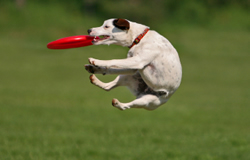
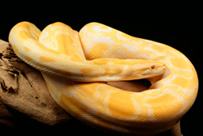

Tributes to Rent A Pet
Bessie Anderson

Bessie Anderson lives in a retirement community that prohibits pets. She wanted a small dog to walk but thought it was impossible.
After discovering Rent A Pet, she rented a lovable basset hound named Sophie. They now enjoy weekly walks together without the responsibilities of pet ownership.
Jason Hutchingson

Jason is a college student who lives in an apartment and wanted a large dog for running and outdoor activities.
Through Rent A Pet, he found a German Shepherd named Kamaikaze. Jason enjoys companionship, exercise, and even met his fiancée while playing Frisbee in the park.
Michael Pinette

Michael travels frequently and cannot own a pet. He enjoys surprising friends with unusual animals.
He has rented snakes, dogs, pigs, and iguanas from Rent A Pet and appreciates the ability to enjoy pets without long-term responsibility.
Melinda Morrison

Melinda has loved horses since childhood but never had the opportunity to own one.
Rent A Pet allows her to rent horses for trail rides, helping her fulfill a lifelong dream without the costs of ownership.